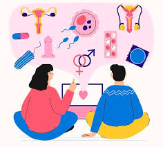

La educación sexual es fundamental porque brinda información científica, clara y adecuada a la edad sobre el cuerpo humano, las relaciones interpersonales y el ejercicio responsable de la sexualidad. Permite que niñas, niños y adolescentes comprendan los cambios físicos y emocionales que experimentan durante la pubertad, reduciendo miedos, mitos y desinformación. Además, contribuye a prevenir embarazos no planificados al enseñar el uso correcto de métodos anticonceptivos y fomentar la toma de decisiones informadas. También ayuda a disminuir la propagación de infecciones de transmisión sexual (ITS), incluyendo el VIH, al promover conductas preventivas y el autocuidado. La educación sexual fortalece la autoestima y el respeto por el propio cuerpo, favoreciendo relaciones basadas en el consentimiento, la comunicación y la igualdad. Es clave para prevenir situaciones de abuso y violencia sexual, ya que enseña a reconocer conductas inapropiadas y a buscar apoyo cuando sea necesario. Promueve valores como el respeto, la responsabilidad y la empatía en las relaciones afectivas. Asimismo, combate estereotipos de género que pueden generar discriminación o desigualdad. Al ofrecer información basada en evidencia científica, evita que las y los jóvenes recurran a fuentes poco confiables, como rumores o contenidos digitales sin fundamento. La educación sexual integral no se limita al aspecto biológico, sino que incluye dimensiones emocionales, sociales y éticas. Esto permite comprender que la sexualidad forma parte del desarrollo humano y debe vivirse de manera saludable y responsable. También contribuye al desarrollo de habilidades para la vida, como la comunicación asertiva y la toma de decisiones. Favorece el respeto a la diversidad y el reconocimiento de los derechos sexuales y reproductivos. Cuando se imparte de manera adecuada, fortalece la relación entre familias, escuela y comunidad. Diversos estudios en América Latina han demostrado que la educación sexual integral no incentiva el inicio temprano de relaciones sexuales, sino que promueve mayor responsabilidad. Por el contrario, la falta de educación sexual incrementa riesgos asociados a desinformación y conductas de riesgo. Además, es reconocida como un derecho humano vinculado al derecho a la salud y a la educación. Organismos internacionales y regionales coinciden en que su implementación mejora indicadores de salud pública. Por ello, integrar programas de educación sexual en los sistemas educativos es una estrategia clave para el bienestar individual y social. En conclusión, la educación sexual es importante porque protege, orienta y empodera a las personas para vivir su sexualidad de forma consciente, segura y respetuosa. Referencias Fondo de Población de las Naciones Unidas (UNFPA). (2014). *Educación integral de la sexualidad: conceptos, enfoques y competencias*. UNFPA América Latina y el Caribe. Organización de las Naciones Unidas para la Educación, la Ciencia y la Cultura (UNESCO). (2018). *Orientaciones técnicas internacionales sobre educación en sexualidad*. UNESCO. Organización Panamericana de la Salud (OPS). (2010). *Educación integral en sexualidad: guía para docentes*. OPS.
